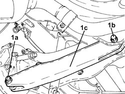
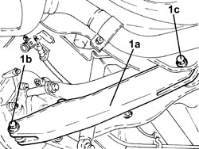
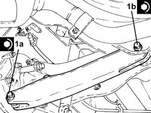

4420B18 REAR SUSPENSION REAR WISHBONE (ONE) - R R
- Path
- Procedures > 44 SUSPENSION AND WHEELS > 4420 REAR SUSPENSION > 4420B REAR SUSPENSION TRACK CONTROL ARMS > 4420B18 REAR SUSPENSION REAR WISHBONE (ONE) - R R
- Kind
- repair procedure (removal / refitting; the operation number is the code)
- Applies to
- all engines; all production periods
- Interactive page
- https://sloeber94.github.io/elrnDB-fCrm/en/#/194000555
Applies to: all engines; all production periods
 Removing
Removing
 Refitting
RefittingOp. 4450A40 REAR WHEEL GEOMETRY - CHECK USING OPTICAL EQUIPMENT, INCLUDES ADJUSTMENT IF NECESSARY
- Position the vehicle on a lift.
Op. 4450B02 LEFT FRONT WHEEL - R.R
Op. 4420A40 L/H OR R/H REAR SUSPENSION COIL SPRING (ONE) - R+R
1. Unscrew the bolts (1a) and (1b), then remove the rear suspension rear track control arm (1c).

Applies to: all engines; all production periods
Refitting
Removing1. Refit the rear suspension rear track control arm (1a) and secure it using new bolts (1b) and (1c) without tightening them.

Applies to: all engines; all production periods
Op. 4420A40 L/H OR R/H REAR SUSPENSION COIL SPRING (ONE) - R+R
Op. 4450B02 LEFT FRONT WHEEL - R.R
- Place the vehicle in design conditions
Op. 4450A40 REAR WHEEL GEOMETRY - CHECK USING OPTICAL EQUIPMENT, INCLUDES ADJUSTMENT IF NECESSARY
to tighten the rear suspension rear track control arm fixing bolts
1. Tighten the new bolts (1a) and (1b) securing the rear suspension rear track control arm to the specified torque.
Component | Fastening | dia | Value (daNm) | Validity |
|---|---|---|---|---|
Rear suspension rear track control arm | Bolt (to be replaced) | M12 | (steering knuckle side) 8.1 - 9.9 + 60° |
Component | Fastening | dia | Value (daNm) | Validity |
|---|---|---|---|---|
Rear suspension rear track control arm | Bolt (to be replaced) | M12 | (crossmember side) 8.1 - 9.9 + 60° |

Applies to: all engines; all production periods
- Remove the vehicle from the lift.
Topics linked from this page (3)
- 4420A40 L/H OR R/H REAR SUSPENSION COIL SPRING (ONE) - R+R
- 4450A40 REAR WHEEL GEOMETRY - CHECK USING OPTICAL EQUIPMENT, INCLUDES ADJUSTMENT IF NECESSARY
- 4450B02 LEFT FRONT WHEEL - R.R